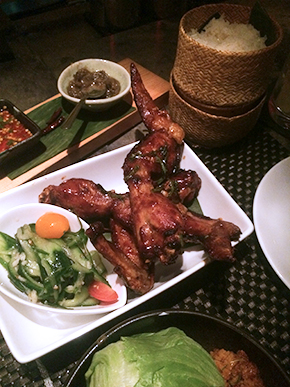
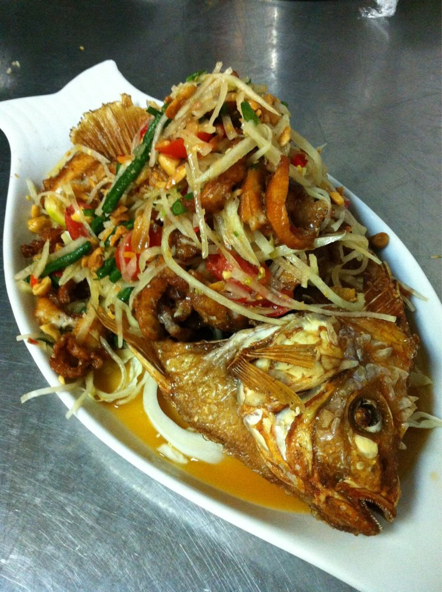
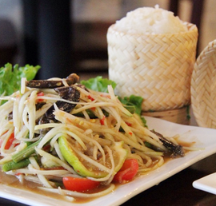
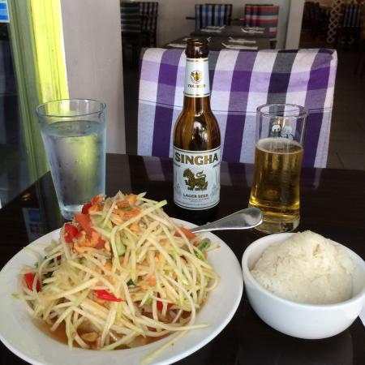

Let's Just Eat It
You don't want to gather supplies or you don't want to cook or you're just hungry for that delicious sticky rice. That's completely understandable. Although authentic Laotian restaurants are rare, there is a solution. You can still get yummy sticky rice and other Laotion foods without all the hassle of cooking and cleaning. Not to mention waiting for UPS or FedEx.
If you live in New York City, or are visiting NYC, you're in luck! If you live anywhere else, click here for tips on finding good Lao sticky rice.
OK NYC, let's try one (or all) of these places below:
|  | Khe-yo 157 Duane St, New York, NY 10013 (212) 587-1089 |
|  | Zabb Elee 75 2nd Ave, New York, NY 10003 (212) 505-9533 |
|  | Zabb City 244 E 13th St, New York, NY 10003 (212) 505-6454 |
|  | Larb Ubol 480 9th Ave, New York, NY 10018 (212) 564-1822 |
 |
Tom & Yum 917 Columbus Ave, New York, NY 10025 (212) 222-1998 |